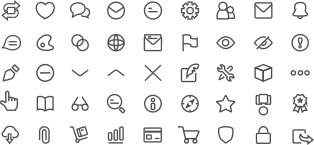

Icons for an Online Marketplace
Client Project | Creating a new style for the icons

Overview
New icons and glyphs for an online marketplace.
Objectives
• Create 41+ icons for the online marketplace including material icons and glyphs.
• Icons must be recognizable between 64pt size and 12pt size.
• Icons will be clear signifiers for the site navigation and actions.
• Style will follow current design trends, have unity, and artistic themes.
My Role
As the Visual Designer my role is to create attractive new icons inspired by current design trends. The purpose for the icons is to provide useful visual information to users of the site and to boost usability. My tools used are pencil, paper, Adobe Illustrator and Photoshop.